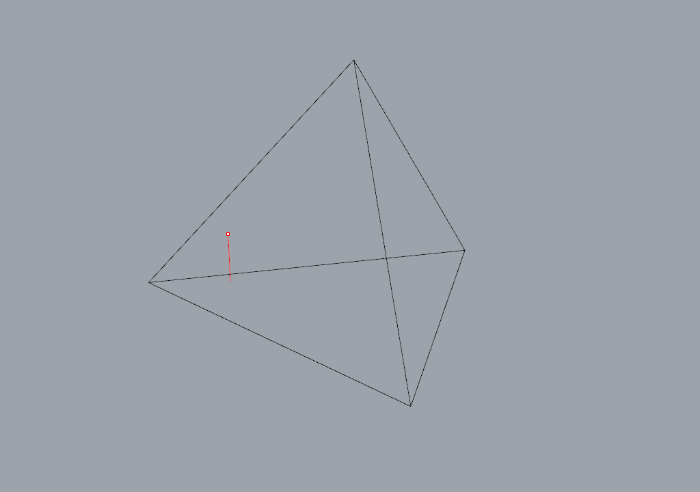

reflect_line_triangle
-
compas.geometry.reflect_line_triangle(line, triangle, epsilon=1e-06)[source] Reflects a line at a triangle.
Parameters: - line (tuple) – Two points defining the line.
- triangle (sequence of sequence of float) – XYZ coordinates of the triangle corners.
Returns: line (tuple) – The reflected line starting at the reflection point on the plane, None otherwise.
Note
The directions of the line and triangular face are important! The line will only be reflected if it points (direction start -> end) in the direction of the triangular face and if the line intersects with the front face of the triangular face (normal direction of the face).
Examples
# tetrahedron points pt1 = (0.0, 0.0, 0.0) pt2 = (6.0, 0.0, 0.0) pt3 = (3.0, 5.0, 0.0) pt4 = (3.0, 2.0, 4.0) # triangular tetrahedron faces tris = [] tris.append([pt4,pt2,pt1]) tris.append([pt4,pt3,pt2]) tris.append([pt4,pt1,pt3]) tris.append([pt1,pt2,pt3]) # initial line (starting ray) line = [(1.0,1.0,0.0),(1.0,1.0,1.0)] # start reflection cycle inside the prism polyline = [] polyline.append(line[0]) for i in range(10): for tri in tris: reflected_line = reflect_line_triangle(line, tri) if reflected_line: line = reflected_line polyline.append(line[0]) break print(polyline)Note
This example visualized in Rhino: